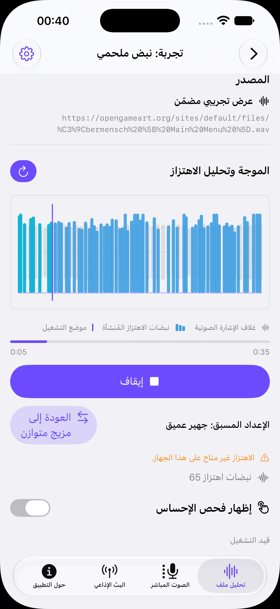
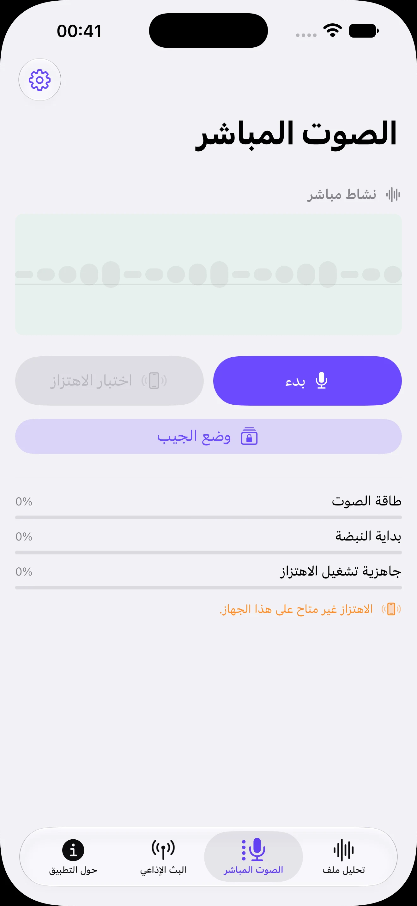
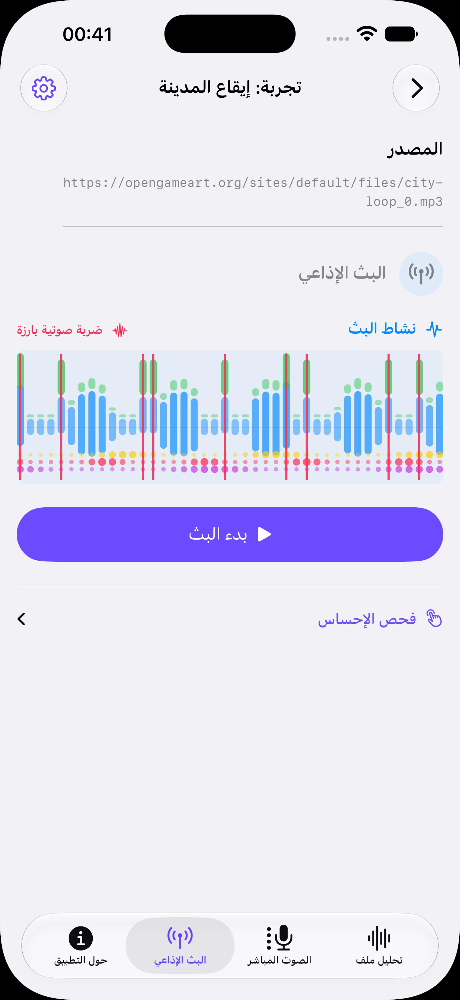
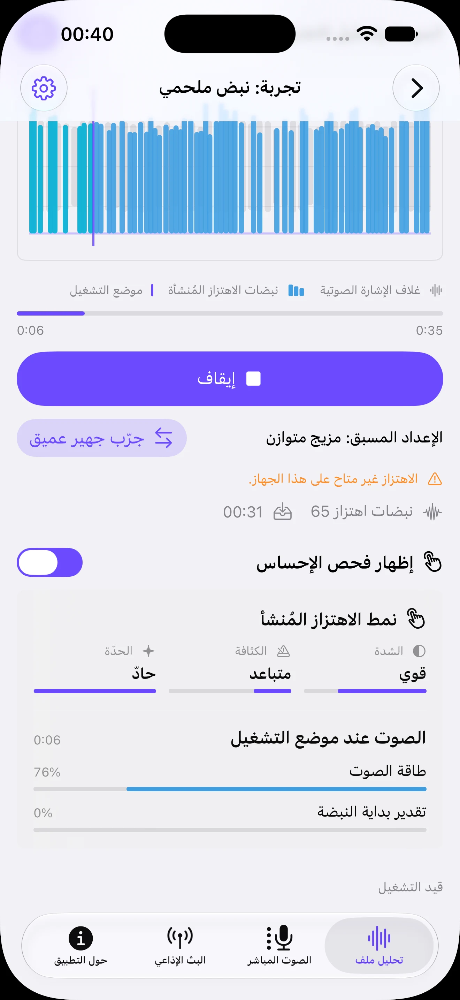

01
ملفات الصوت والفيديو
استورد ملفًا أو افتح عرضًا تجريبيًا مضمّنًا. حلّل الملف مرة واحدة واحفظ النتيجة لإعادة تشغيلها مع نبضات متزامنة.


أحسّ بإيقاع الموسيقى
أحسّ بالإيقاع والجهير باهتزاز iPhone متوافق. جرّب أربعة مقاطع مضمّنة، وحلّل الصوت والفيديو واضبط ستة إعدادات للاهتزاز.

استورد ملفًا أو افتح عرضًا تجريبيًا مضمّنًا. حلّل الملف مرة واحدة واحفظ النتيجة لإعادة تشغيلها مع نبضات متزامنة.

تابع مستوى الصوت المحيط، واختبر الاهتزاز على iPhone متوافق قبل تشغيل الميكروفون.

شغّل رابط صوت أو فيديو مباشرًا متوافقًا. يدعم HLS التشغيل فقط.

لقطات فعلية من التطبيق بالعربية؛ نشاط البث معروض ببيانات تجريبية.
ستة إعدادات مسبقة؛ اضبط شدة الاهتزاز وحساسيته وكثافته وتوقيته.

يتطلب الاهتزاز جهاز iPhone متوافقًا مزودًا بمحرك Taptic Engine. يمكنك تشغيل الصوت وعرض التحليل على iPad دون افتراض وجود اهتزاز مماثل.
يمكن تحليل الملفات المحلية المتوافقة وإعادة تشغيل نتائجها بلا اتصال. يتطلب الصوت المباشر إذن الميكروفون. تدعم روابط الصوت والفيديو المباشرة المتوافقة نبضات أثناء التشغيل وتتطلب اتصالًا. HLS للتشغيل فقط، ولا يدعم التطبيق بث خدمات الموسيقى المحمي.
TactiBeat ليس جهازًا طبيًا ولا يحل محل السماعات الطبية أو زراعة القوقعة أو الرعاية أو المشورة المتخصصة.
لا. تضمّ TactiBeat أربعة مقاطع CC0. افتح مقطعًا واضغط «تحليل»، ثم أعد تشغيل الاهتزاز المُنشأ على iPhone متوافق.
يمكن تحليل الملفات المحلية المتوافقة وإعادة تشغيل نتائجها بلا اتصال. يتطلب الصوت المباشر إذن الميكروفون. تدعم روابط الصوت والفيديو المباشرة المتوافقة نبضات أثناء التشغيل وتتطلب اتصالًا. HLS للتشغيل فقط، ولا يدعم التطبيق بث خدمات الموسيقى المحمي.
جرّب «اختبار الاهتزاز» على iPhone متوافق. للصوت المباشر، اسمح باستخدام الميكروفون واقترب من المصدر أو ارفع الحساسية إذا كان خافتًا. لا تفترض وجود محرك اهتزاز مماثل على iPad.
لا. يلتقط الصوت المباشر الصوت المحيط عبر الميكروفون، لا صوت النظام. استخدم ملفًا أو رابط وسائط مباشرًا متوافقًا للتشغيل داخل TactiBeat.
لا. لكل نتيجة محفوظة إعداداتها. اختر «إعادة الإنشاء» وراجع الإعدادات واحفظها لتحليل الملف مرة أخرى.
لا يمكن لاهتزاز الهاتف تمثيل الطبقة الصوتية أو الكلمات أو جرس الصوت بدقة. يركّز التطبيق على التوقيت والإيقاع. وهو ليس جهازًا طبيًا ولا بديلًا عن الرعاية المتخصصة.